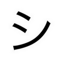

Bitcoin has always been about self-sovereignty, decentralization, and freedom. These are exactly the reasons that I like Nostr. It's not bitcoin, but it's closely linked. You can "zap" others in a click or tap, that is, you can instantly send Bitcoin sats. シ Plus, lots of nostr people are bitcoin people, and lots of bitcoin people are nostr people. Community matters.
What's more, a symbiotic ecosystem is building to maintain the "store of value" aspect of bitcoin and to realize the "means of exchange" component. That was Satoshi's original "peer to peer" goal for "electronic cash." These parts are working together:
These things might be worth learning about.
Thoughts? I can be reached several ways, see all contacts and links at https://linktr.ee/crrdlx or see my links housed entirely on nostr at nostree.me
